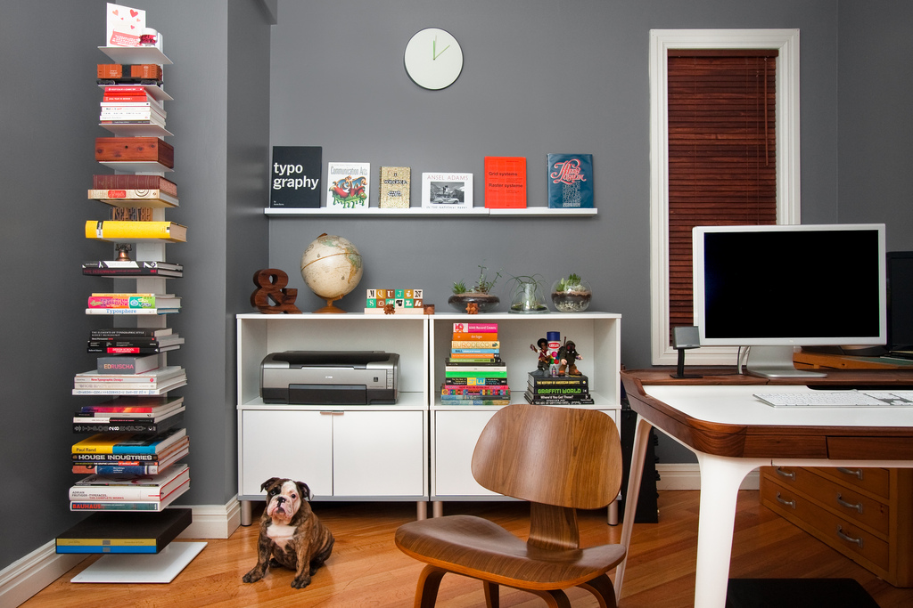

Conceito
Também conhecido pela sigla SOHO (Small Office and Home Office), home office pode ser traduzido como escritório em casa. Esse conceito pode ser aplicado por profissionais que trabalham remotamente de suas casas ou espaços alternativos como os coworking, cafés entre outros.
Geralmente o home office é utilizado por freelancers, empresas que não dependam que o colaborador realize suas funções in loco e profissionais autônomos, esse modelo de trabalho é largamente utilizado em uma economia globalizada.
Vantagens e Desafios
Vantagens
Economia de tempo e dinheiro
O aproveitamento de tempo e dinheiro utilizado no deslocamento é uma das maiores vantagens deste modelo de trabalho. Atualmente, o alto preço dos combustíveis e o enorme fluxo dos automóveis nas vias, o que gera engarrafamentos diários, são fatores que estressam os colaboradores antes mesmo da sua chegada à estação de trabalho.
Os chamados horários comerciais, entre às 7h e 18h, centralizam o fluxo de deslocamento da sociedade em geral, pais levando as crianças às escolas, estudantes indo para as faculdades, profissionais para o escritório etc, demandado horas de deslocamento.
Sabe-se também, que os problemas de saúde relacionados à poluição (sonora e do ar) são crescentes na sociedade atual. Diminuir o tempo gasto no trânsito é um fator que está diretamente relacionado à melhora da saúde, principalmente respiratória, do profissional.
Kati Morton, mestre e psicóloga clínica pela Universidade de Pepperdine, situada na Califórnia afirma que viagens diárias longas até o ambiente de trabalho tem efeito negativo direto na saúde mental, física e até mesmo na produtividade do profissional.
No dress code
A inexistência de código de vestimenta (no dress code), abre a possibilidade de trabalhar da forma mais confortável possível. Porém deve se observar alguns pontos.
A escolha da roupa para trabalhar faz parte da dinâmica da rotina de trabalho, mesmo dentro de casa. Você pode não usar sapatos, por exemplo, mas deve se vestir de forma compatível com suas atividades.
Uma boa dica é: se for convocado para uma chamada de vídeo, você se sente pronto para atender? Se a resposta for positiva, você estará bem vestido para o home office.
O ambiente de trabalho com a sua cara
A flexibilidade de adequar o seu ambiente de trabalho de forma pessoal é sem dúvida outra grande vantagem.
Sabe-se que o processo de criação e concentração é pessoal. Portanto, no home office o trabalhador quem decide se o ambiente de trabalho deve ser embalado por sua bandas preferidas ou se o silêncio deve permanecer, a temperatura, grau de luminosidade, aromas do ambiente, entre outros fatores, são controlados unicamente pelo profissional.
O que podem parecer detalhes mínimos, mas estão diretamente relacionados com a satisfação, conforto e a produtividade.

Desafios e desvantagens
Vida pessoal x Vida profissional
A separação da vida pessoal do ambiente de trabalho é considerada um desafio no home office, principalmente para os profissionais que possuem crianças em casa. Os pequenos solicitam atenção constantemente, portanto, definir hábitos e rotinas se torna um importante aliado nesse processo.
Tenha mapeada a sua rotina diária de trabalho associada aos seus compromissos pessoais. Usar agendas ou planners, digitais ou físicos, vão te auxiliar nesse processo.
Além disso, utilize um lugar reservado, um ambiente destinado somente ao trabalho. Isso te ajudará a separar o momento de trabalho e lazer.
Disciplina e foco
Manter a disciplina e o foco é outro desafio a ser superado ao escolher esse modelo de trabalho. Compreender que, mesmo estando em casa, existe a necessidade de manter em mente todas as atividades a serem cumpridas no dia ou jornada de trabalho.
Listas de tarefas e metas diárias, semanais e mensais podem auxiliar na manutenção do foco e atenção às atividades. Lembre-se que o compromisso com o trabalho deve ser o mesmo, tanto no home office quanto em qualquer outro modelo de trabalho.
Overtime
Como no home office os horários tendem a ser mais flexíveis, a falta de controle dos horários pelo próprio colaborador pode fazê-lo “gastar” mais tempo nas atividades.
Para superar esse desafio, o profissional deve se organizar e controlar os horários. Tenha horário para começar e finalizar suas atividades, pausas para um cafezinho ou a hora do almoço são importantes, mas não devem ser prolongadas, nem desviar o foco.
Isolamento social
O ambiente de trabalho, quando saudável, é um meio no qual se fazem colegas, amigos, pessoas que passam grande parte do dia juntos e acabam criando um vínculo.
Portanto o desafio de trabalhar em home office é não se isolar socialmente, aproveitando as pausas e a flexibilidade de horários para manter os contatos sociais.
Existem ferramentas, como o Zoom, por exemplo, que possibilita que as distâncias sejam virtualmente encurtadas.
8 dicas para se trabalhar em home office
- Crie rotinas, seja focado e disciplinado;
- organize sua rotina de trabalho;
- faça listas de atividades para evitar procrastinar;
- tenha horários para as atividades;
- comunique-se;
- solicite feedback aos seus chefes diretos e colegas de trabalhos;
- não se esqueça de alongar, hidratar e tenha muita atenção à ergonomia do seu ambiente de trabalho;
- ao final da jornada de trabalho, saia do escritório.